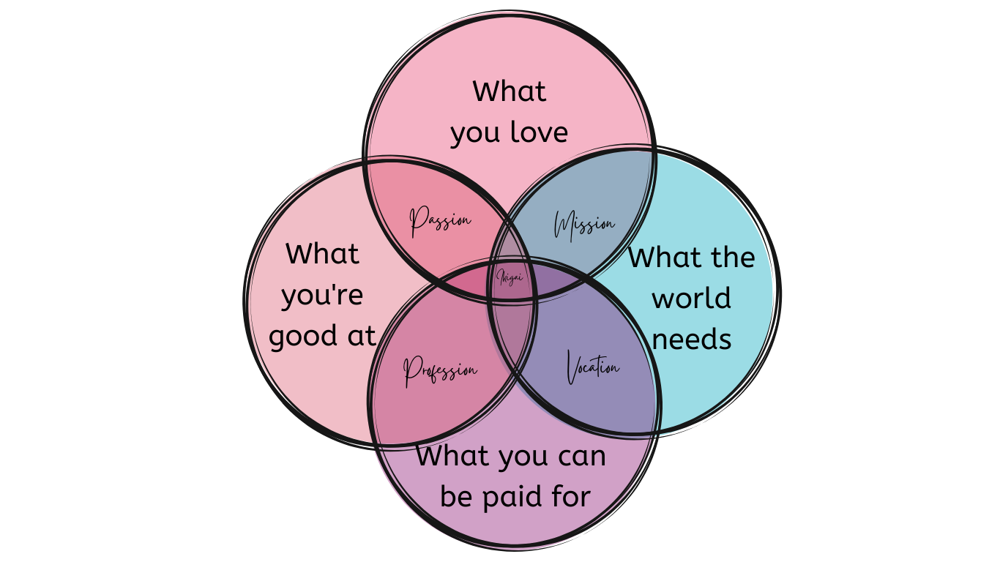

"Your reason for being"
👘 IKIGAI
‘Iki’ in Japanese means ‘life,’ and ‘gai’ describes value or worth.
Your ikigai is your life purpose or your bliss.
It’s what brings you joy and inspires you to get out of bed every day.
How does Ikigai work?
Your ikigai resides at the intersection of multiple factors in your life.
As you fill in each circle, try to keep an eye out for the commonalities between them—and especially the similarities that fit right in the center of the diagram. This is the sweet spot that will help you clearly define your ikigai.
Click here to get a PDF Template and find your Ikigai